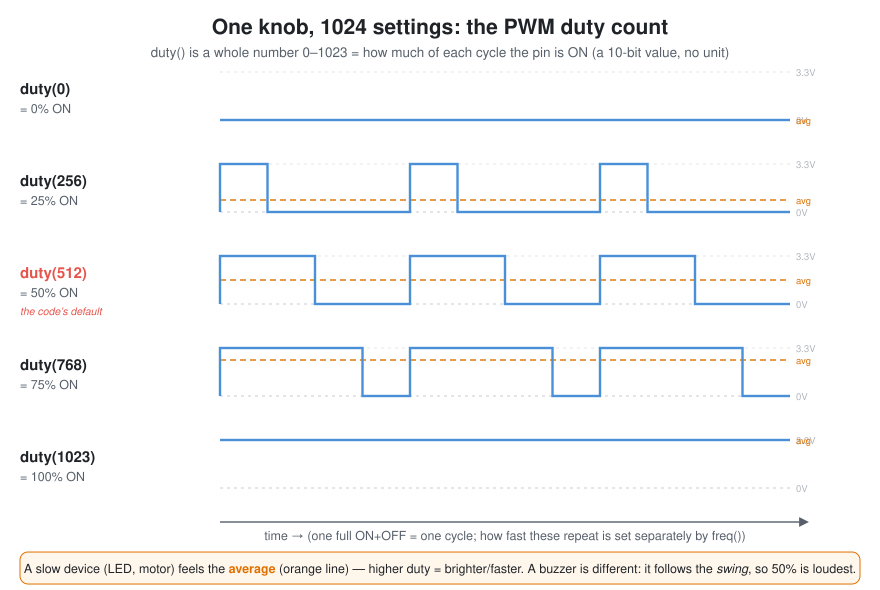

A GPIO pin only knows two states: HIGH (3.3 V, "on") or LOW (0 V, "off"). There's no "half on." So how do we get a dim LED, a medium-speed fan, or a quiet buzzer? The trick is PWM — Pulse-Width Modulation: flip the pin on and off really fast, and change how much of each flip is "on." That's the whole idea.
duty. PWM has two knobs — freq() (how fast it flips) and duty() (how much of each flip is on). This page is about duty.
When you write buzzer.duty(512), that 512 is not volts and not seconds. It's a raw duty count on MicroPython's scale: a whole number from 0 to 1023. It just says "what fraction of each cycle is the pin ON," as a number out of 1023.
duty(0) → 0/1023 → 0% on → the pin is fully OFF.duty(512) → 512/1023 → ≈ 50% on → on exactly half of each cycle.duty(1023) → 1023/1023 → 100% on → the pin is fully ON.To turn a duty count into a percentage: percent = duty ÷ 1023 × 100. So 512 ÷ 1023 × 100 ≈ 50%.

The ESP32's PWM hardware here uses 10 bits of resolution. Ten bits can count 210 = 1024 different values, and counting from zero that's 0, 1, 2, … up to 1023. So instead of 100 brightness steps you get 1024 — a finer dimmer. It's the same reason a number could go 0–255 (8 bits) or 0–65535 (16 bits): the max is set by how many bits the counter has.
| duty() | fraction | percent |
|---|---|---|
0 | 0 / 1023 | 0% |
256 | 256 / 1023 | 25% |
512 | 512 / 1023 | ≈ 50% |
768 | 768 / 1023 | 75% |
1023 | 1023 / 1023 | 100% |
| Duty is NOT… | Why |
|---|---|
| a voltage | The pin is always either 0 V or 3.3 V. Duty changes the fraction of time at 3.3 V, not the voltage itself. |
| a duration | Duty is the on/off split inside one tiny cycle. How long a note or blink lasts is a separate sleep in your code. |
| the frequency | How fast the cycles repeat is freq(). Duty is how much of each cycle is on. You can change one without the other. |
Here's the fun part: the exact same duty() number does a different job on each part, because each part reacts to the pulses differently.
| Device | What it "feels" | So higher duty means… |
|---|---|---|
| 💡 LED | the average (your eye blurs the fast flicker) | brighter — straight up to 100% |
| 🌀 Fan / motor | the average (too heavy to follow each pulse) | faster — straight up to 100% |
| 🔊 Buzzer | the swing (it must move back and forth to make sound) | louder only up to 50%, then quieter again |
For the LED and motor, PWM works like a dimmer: the device is too slow to notice individual pulses, so it responds to the average level (the orange line in the diagram) — more on-time, more average, brighter/faster. The buzzer is the odd one out, because sound comes from motion, not average power:
The buzzer is loudest at 50% duty and gets quieter toward either 0% or 100%. Full details in the buzzer circuit section.
from machine import Pin, PWM
led = PWM(Pin(12)) # LED on GPIO 12
led.freq(1000) # flip 1000 times a second (fast enough that the eye sees steady light)
led.duty(1023) # 100% -> full brightness
led.duty(512) # ~50% -> half brightness
led.duty(0) # 0% -> off
buzzer = PWM(Pin(4))
buzzer.freq(440) # 440 flips/sec = the note A (freq = PITCH)
buzzer.duty(512) # ~50% = loudest for a buzzer (duty = VOLUME)
duty_u16(), which uses a 16-bit scale (0–65535) — same idea, finer steps. This camp's code uses the ESP32's duty() with the 0–1023 scale everywhere, so stick with that.
0–1023 (no unit) = how much of each cycle is ON. 512 ≈ 50%.← Back to tutorial home · ⚡ Circuits & the physics behind the parts →